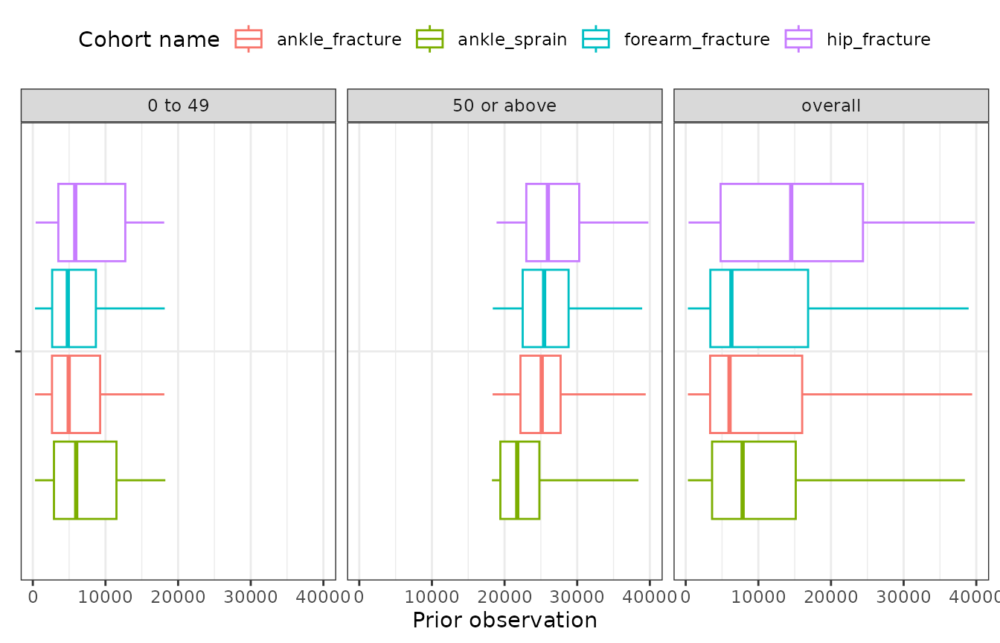

Summarise patient characteristics
Source:vignettes/a06_summarisePatientCharacteristics.Rmd
a06_summarisePatientCharacteristics.RmdIntroduction
In this example we’re going to summarise the characteristics of individuals with an ankle sprain, ankle fracture, forearm fracture, or a hip fracture using the Eunomia synthetic data.
We’ll begin by creating our study cohorts.
library(CDMConnector)
library(CodelistGenerator)
library(CohortCharacteristics)
library(dplyr)
library(ggplot2)
con <- DBI::dbConnect(duckdb::duckdb(),
dbdir = CDMConnector::eunomia_dir()
)
cdm <- CDMConnector::cdm_from_con(con,
cdm_schem = "main",
write_schema = "main",
cdm_name = "Eunomia"
)
cdm <- generateConceptCohortSet(
cdm = cdm,
name = "injuries",
conceptSet = list(
"ankle_sprain" = 81151,
"ankle_fracture" = 4059173,
"forearm_fracture" = 4278672,
"hip_fracture" = 4230399
),
end = "event_end_date",
limit = "all"
)
settings(cdm$injuries)
#> # A tibble: 4 × 6
#> cohort_definition_id cohort_name limit prior_observation future_observation
#> <int> <chr> <chr> <dbl> <dbl>
#> 1 1 ankle_sprain all 0 0
#> 2 2 ankle_fracture all 0 0
#> 3 3 forearm_fract… all 0 0
#> 4 4 hip_fracture all 0 0
#> # ℹ 1 more variable: end <chr>
cohortCount(cdm$injuries)
#> # A tibble: 4 × 3
#> cohort_definition_id number_records number_subjects
#> <int> <int> <int>
#> 1 1 1915 1357
#> 2 2 464 427
#> 3 3 569 510
#> 4 4 138 132Summarising study cohorts
Now we’ve created our cohorts, we can obtain a summary of the characteristics in the patients included in these cohorts.
chars <- cdm$injuries |>
summariseCharacteristics(ageGroup = list(c(0, 49), c(50, Inf)))
chars |>
glimpse()
#> Rows: 192
#> Columns: 13
#> $ result_id <int> 1, 1, 1, 1, 1, 1, 1, 1, 1, 1, 1, 1, 1, 1, 1, 1, 1, 1,…
#> $ cdm_name <chr> "Eunomia", "Eunomia", "Eunomia", "Eunomia", "Eunomia"…
#> $ group_name <chr> "cohort_name", "cohort_name", "cohort_name", "cohort_…
#> $ group_level <chr> "ankle_sprain", "ankle_fracture", "forearm_fracture",…
#> $ strata_name <chr> "overall", "overall", "overall", "overall", "overall"…
#> $ strata_level <chr> "overall", "overall", "overall", "overall", "overall"…
#> $ variable_name <chr> "Number records", "Number records", "Number records",…
#> $ variable_level <chr> NA, NA, NA, NA, NA, NA, NA, NA, NA, NA, NA, NA, NA, N…
#> $ estimate_name <chr> "count", "count", "count", "count", "count", "count",…
#> $ estimate_type <chr> "integer", "integer", "integer", "integer", "integer"…
#> $ estimate_value <chr> "1915", "464", "569", "138", "1357", "427", "510", "1…
#> $ additional_name <chr> "overall", "overall", "overall", "overall", "overall"…
#> $ additional_level <chr> "overall", "overall", "overall", "overall", "overall"…Now we have these results, we can create a table with an overall summary of the people in each cohort.
tableCharacteristics(chars)| CDM name | Variable name | Variable level | Estimate name | Cohort name | |||
|---|---|---|---|---|---|---|---|
| ankle_sprain | ankle_fracture | forearm_fracture | hip_fracture | ||||
| Eunomia | Number records | - | N | 1,915 | 464 | 569 | 138 |
| Number subjects | - | N | 1,357 | 427 | 510 | 132 | |
| Cohort start date | - | Median [Q25 - Q75] | 1982-11-09 [1968-06-15 - 1999-04-13] | 1981-01-15 [1965-03-11 - 1997-08-03] | 1981-07-24 [1967-03-05 - 2000-12-16] | 1996-09-17 [1977-09-20 - 2010-06-22] | |
| Range | 1912-02-25 to 2019-05-30 | 1911-09-07 to 2019-06-23 | 1917-08-16 to 2019-06-26 | 1927-12-14 to 2019-05-08 | |||
| Cohort end date | - | Median [Q25 - Q75] | 1982-12-10 [1968-07-06 - 1999-05-09] | 1981-02-28 [1965-04-11 - 1997-10-12] | 1981-08-23 [1967-04-10 - 2001-02-27] | 1996-11-16 [1977-12-04 - 2010-07-22] | |
| Range | 1912-03-10 to 2019-05-30 | 1911-12-06 to 2019-06-24 | 1917-11-14 to 2019-06-26 | 1928-03-13 to 2019-06-07 | |||
| Sex | Female | N (%) | 954 (49.8%) | 238 (51.3%) | 286 (50.3%) | 74 (53.6%) | |
| Male | N (%) | 961 (50.2%) | 226 (48.7%) | 283 (49.7%) | 64 (46.4%) | ||
| Age | - | Median [Q25 - Q75] | 21 [9 - 41] | 16 [9 - 43] | 17 [9 - 46] | 40 [13 - 66] | |
| Mean (SD) | 26.63 (21.03) | 27.38 (24.70) | 28.69 (25.97) | 40.06 (28.82) | |||
| Range | 0 to 105 | 0 to 107 | 0 to 106 | 1 to 108 | |||
| Age group | 0 to 49 | N (%) | 1,587 (82.9%) | 367 (79.1%) | 440 (77.3%) | 87 (63.0%) | |
| 50 or above | N (%) | 328 (17.1%) | 97 (20.9%) | 129 (22.7%) | 51 (37.0%) | ||
| Prior observation | - | Median [Q25 - Q75] | 7,833 [3,628 - 15,147] | 6,030 [3,360 - 16,032] | 6,289 [3,390 - 16,847] | 14,522 [4,801 - 24,401] | |
| Mean (SD) | 9,918.17 (7,672.74) | 10,196.57 (9,011.31) | 10,670.43 (9,480.30) | 14,821.73 (10,521.89) | |||
| Range | 299 to 38,429 | 299 to 39,430 | 299 to 38,943 | 390 to 39,792 | |||
| Future observation | - | Median [Q25 - Q75] | 12,868 [6,860 - 18,078] | 13,748 [6,878 - 19,331] | 13,165 [5,988 - 18,548] | 7,798 [2,874 - 14,913] | |
| Mean (SD) | 12,865.11 (7,543.50) | 13,470.92 (8,215.96) | 12,913.27 (7,929.17) | 9,167.33 (7,160.81) | |||
| Range | 0 to 38,403 | 1 to 39,051 | 0 to 36,654 | 0 to 29,045 | |||
| Days in cohort | - | Median [Q25 - Q75] | 22 [15 - 29] | 61 [31 - 91] | 61 [31 - 91] | 61 [31 - 91] | |
| Mean (SD) | 25.02 (8.00) | 61.65 (25.38) | 62.16 (25.32) | 59.26 (24.79) | |||
| Range | 1 to 37 | 2 to 92 | 1 to 91 | 1 to 91 | |||
chars |>
filter(variable_name == "Age") |>
plotCharacteristics(
plotStyle = "boxplot",
colour = "cohort_name",
facet = c("cdm_name")
)
Stratified summaries
We can also generate summaries that are stratified by some variable of interest. In this case we add an age group variable to our cohort table and then stratify our results by age group.
chars <- cdm$injuries |>
PatientProfiles::addAge(ageGroup = list(
c(0, 49),
c(50, Inf)
)) |>
summariseCharacteristics(strata = list("age_group"))
tableCharacteristics(chars,
groupColumn = "age_group"
)| CDM name | Variable name | Variable level | Estimate name | Cohort name | |||
|---|---|---|---|---|---|---|---|
| ankle_sprain | ankle_fracture | hip_fracture | forearm_fracture | ||||
| overall | |||||||
| Eunomia | Number records | - | N | 1,915 | 464 | 138 | 569 |
| Number subjects | - | N | 1,357 | 427 | 132 | 510 | |
| Cohort start date | - | Median [Q25 - Q75] | 1982-11-09 [1968-06-15 - 1999-04-13] | 1981-01-15 [1965-03-11 - 1997-08-03] | 1996-09-17 [1977-09-20 - 2010-06-22] | 1981-07-24 [1967-03-05 - 2000-12-16] | |
| Range | 1912-02-25 to 2019-05-30 | 1911-09-07 to 2019-06-23 | 1927-12-14 to 2019-05-08 | 1917-08-16 to 2019-06-26 | |||
| Cohort end date | - | Median [Q25 - Q75] | 1982-12-10 [1968-07-06 - 1999-05-09] | 1981-02-28 [1965-04-11 - 1997-10-12] | 1996-11-16 [1977-12-04 - 2010-07-22] | 1981-08-23 [1967-04-10 - 2001-02-27] | |
| Range | 1912-03-10 to 2019-05-30 | 1911-12-06 to 2019-06-24 | 1928-03-13 to 2019-06-07 | 1917-11-14 to 2019-06-26 | |||
| Sex | Female | N (%) | 954 (49.8%) | 238 (51.3%) | 74 (53.6%) | 286 (50.3%) | |
| Male | N (%) | 961 (50.2%) | 226 (48.7%) | 64 (46.4%) | 283 (49.7%) | ||
| Age | - | Median [Q25 - Q75] | 21 [9 - 41] | 16 [9 - 43] | 40 [13 - 66] | 17 [9 - 46] | |
| Mean (SD) | 26.63 (21.03) | 27.38 (24.70) | 40.06 (28.82) | 28.69 (25.97) | |||
| Range | 0 to 105 | 0 to 107 | 1 to 108 | 0 to 106 | |||
| Prior observation | - | Median [Q25 - Q75] | 7,833 [3,628 - 15,147] | 6,030 [3,360 - 16,032] | 14,522 [4,801 - 24,401] | 6,289 [3,390 - 16,847] | |
| Mean (SD) | 9,918.17 (7,672.74) | 10,196.57 (9,011.31) | 14,821.73 (10,521.89) | 10,670.43 (9,480.30) | |||
| Range | 299 to 38,429 | 299 to 39,430 | 390 to 39,792 | 299 to 38,943 | |||
| Future observation | - | Median [Q25 - Q75] | 12,868 [6,860 - 18,078] | 13,748 [6,878 - 19,331] | 7,798 [2,874 - 14,913] | 13,165 [5,988 - 18,548] | |
| Mean (SD) | 12,865.11 (7,543.50) | 13,470.92 (8,215.96) | 9,167.33 (7,160.81) | 12,913.27 (7,929.17) | |||
| Range | 0 to 38,403 | 1 to 39,051 | 0 to 29,045 | 0 to 36,654 | |||
| Days in cohort | - | Median [Q25 - Q75] | 22 [15 - 29] | 61 [31 - 91] | 61 [31 - 91] | 61 [31 - 91] | |
| Mean (SD) | 25.02 (8.00) | 61.65 (25.38) | 59.26 (24.79) | 62.16 (25.32) | |||
| Range | 1 to 37 | 2 to 92 | 1 to 91 | 1 to 91 | |||
| 0 to 49 | |||||||
| Eunomia | Number records | - | N | 1,587 | 367 | 87 | 440 |
| Number subjects | - | N | 1,211 | 341 | 86 | 411 | |
| Cohort start date | - | Median [Q25 - Q75] | 1978-07-08 [1965-08-07 - 1992-05-07] | 1974-08-26 [1960-08-21 - 1988-07-30] | 1983-05-29 [1973-07-30 - 1997-03-20] | 1974-12-23 [1964-05-04 - 1988-03-09] | |
| Range | 1912-02-25 to 2019-05-06 | 1911-09-07 to 2018-10-12 | 1927-12-14 to 2019-01-09 | 1917-08-16 to 2019-06-26 | |||
| Cohort end date | - | Median [Q25 - Q75] | 1978-08-05 [1965-09-01 - 1992-05-28] | 1974-10-25 [1960-10-20 - 1988-10-09] | 1983-08-27 [1973-08-29 - 1997-05-19] | 1975-02-06 [1964-06-11 - 1988-05-07] | |
| Range | 1912-03-10 to 2019-05-06 | 1911-12-06 to 2018-11-11 | 1928-03-13 to 2019-04-09 | 1917-11-14 to 2019-06-26 | |||
| Sex | Female | N (%) | 791 (49.8%) | 190 (51.8%) | 41 (47.1%) | 213 (48.4%) | |
| Male | N (%) | 796 (50.2%) | 177 (48.2%) | 46 (52.9%) | 227 (51.6%) | ||
| Age | - | Median [Q25 - Q75] | 16 [7 - 31] | 13 [7 - 25] | 15 [9 - 34] | 13 [7 - 23] | |
| Mean (SD) | 19.32 (13.95) | 16.49 (12.90) | 21.15 (15.27) | 16.48 (12.87) | |||
| Range | 0 to 49 | 0 to 49 | 1 to 49 | 0 to 49 | |||
| Prior observation | - | Median [Q25 - Q75] | 5,970 [2,910 - 11,512] | 4,941 [2,640 - 9,266] | 5,838 [3,510 - 12,728] | 4,814 [2,662 - 8,680] | |
| Mean (SD) | 7,249.25 (5,084.37) | 6,221.68 (4,697.60) | 7,920.29 (5,584.42) | 6,212.80 (4,686.12) | |||
| Range | 299 to 18,243 | 299 to 18,105 | 390 to 18,086 | 299 to 18,158 | |||
| Future observation | - | Median [Q25 - Q75] | 14,582 [9,510 - 19,018] | 15,936 [10,900 - 20,859] | 12,667 [7,957 - 16,282] | 15,833 [11,020 - 19,580] | |
| Mean (SD) | 14,564.63 (6,955.73) | 15,980.16 (7,193.49) | 12,656.62 (6,557.62) | 15,495.41 (6,973.47) | |||
| Range | 0 to 38,403 | 30 to 39,051 | 162 to 29,045 | 0 to 36,654 | |||
| Days in cohort | - | Median [Q25 - Q75] | 22 [15 - 29] | 61 [31 - 91] | 61 [31 - 91] | 61 [31 - 91] | |
| Mean (SD) | 25.06 (7.88) | 61.01 (25.37) | 63.41 (23.87) | 63.18 (25.35) | |||
| Range | 1 to 37 | 31 to 91 | 31 to 91 | 1 to 91 | |||
| 50 or above | |||||||
| Eunomia | Number records | - | N | 328 | 97 | 51 | 129 |
| Number subjects | - | N | 292 | 93 | 48 | 116 | |
| Cohort start date | - | Median [Q25 - Q75] | 2008-10-08 [1997-01-11 - 2014-03-06] | 2009-07-25 [1999-01-22 - 2015-04-07] | 2010-09-19 [2005-05-10 - 2016-01-10] | 2008-12-20 [2000-10-17 - 2014-09-23] | |
| Range | 1961-02-11 to 2019-05-30 | 1970-06-04 to 2019-06-23 | 1982-01-17 to 2019-05-08 | 1961-07-16 to 2019-06-12 | |||
| Cohort end date | - | Median [Q25 - Q75] | 2008-10-30 [1997-02-13 - 2014-03-25] | 2009-09-23 [1999-04-22 - 2015-06-03] | 2010-10-19 [2005-06-24 - 2016-03-26] | 2009-01-19 [2000-12-09 - 2014-12-22] | |
| Range | 1961-02-25 to 2019-05-30 | 1970-07-04 to 2019-06-24 | 1982-04-17 to 2019-06-07 | 1961-08-15 to 2019-06-13 | |||
| Sex | Female | N (%) | 163 (49.7%) | 48 (49.5%) | 33 (64.7%) | 73 (56.6%) | |
| Male | N (%) | 165 (50.3%) | 49 (50.5%) | 18 (35.3%) | 56 (43.4%) | ||
| Age | - | Median [Q25 - Q75] | 59 [53 - 67] | 68 [60 - 75] | 71 [62 - 82] | 69 [61 - 78] | |
| Mean (SD) | 62.00 (11.40) | 68.59 (11.77) | 72.31 (13.84) | 70.33 (12.90) | |||
| Range | 50 to 105 | 50 to 107 | 51 to 108 | 50 to 106 | |||
| Prior observation | - | Median [Q25 - Q75] | 21,747 [19,421 - 24,795] | 25,114 [22,188 - 27,715] | 25,964 [22,994 - 30,277] | 25,445 [22,496 - 28,815] | |
| Mean (SD) | 22,831.56 (4,167.50) | 25,235.61 (4,310.11) | 26,594.78 (5,045.12) | 25,874.71 (4,714.82) | |||
| Range | 18,264 to 38,429 | 18,354 to 39,430 | 18,899 to 39,792 | 18,379 to 38,943 | |||
| Future observation | - | Median [Q25 - Q75] | 3,494 [1,722 - 6,684] | 2,909 [1,173 - 5,608] | 2,808 [914 - 4,672] | 3,335 [1,316 - 5,988] | |
| Mean (SD) | 4,642.15 (4,070.72) | 3,977.22 (3,624.08) | 3,215.02 (3,035.15) | 4,105.97 (3,334.07) | |||
| Range | 0 to 19,780 | 1 to 17,814 | 0 to 13,595 | 1 to 16,492 | |||
| Days in cohort | - | Median [Q25 - Q75] | 22 [15 - 29] | 61 [31 - 91] | 61 [31 - 61] | 61 [31 - 91] | |
| Mean (SD) | 24.82 (8.58) | 64.10 (25.37) | 52.18 (24.95) | 58.69 (25.01) | |||
| Range | 1 to 36 | 2 to 92 | 1 to 91 | 2 to 91 | |||
chars |>
filter(variable_name == "Prior observation") |>
plotCharacteristics(
plotStyle = "boxplot",
colour = "cohort_name",
facet = c("age_group")
) +
coord_flip()
Summaries including presence in other cohorts
meds_cs <- getDrugIngredientCodes(
cdm = cdm,
name = c("acetaminophen", "morphine", "warfarin")
)
cdm <- generateConceptCohortSet(
cdm = cdm,
name = "meds",
conceptSet = meds_cs,
end = "event_end_date",
limit = "all",
overwrite = TRUE
)
chars <- cdm$injuries |>
summariseCharacteristics(cohortIntersectFlag = list(
"Medications prior to index date" = list(
targetCohortTable = "meds",
window = c(-Inf, -1)
),
"Medications on index date" = list(
targetCohortTable = "meds",
window = c(0, 0)
)
))These results will automatically be included when we create our table with patient characteristics.
tableCharacteristics(chars)| CDM name | Variable name | Variable level | Estimate name | Table | Window | Value | Cohort name | |||
|---|---|---|---|---|---|---|---|---|---|---|
| ankle_sprain | ankle_fracture | forearm_fracture | hip_fracture | |||||||
| Eunomia | Number records | - | N | overall | overall | overall | 1,915 | 464 | 569 | 138 |
| Number subjects | - | N | overall | overall | overall | 1,357 | 427 | 510 | 132 | |
| Cohort start date | - | Median [Q25 - Q75] | overall | overall | overall | 1982-11-09 [1968-06-15 - 1999-04-13] | 1981-01-15 [1965-03-11 - 1997-08-03] | 1981-07-24 [1967-03-05 - 2000-12-16] | 1996-09-17 [1977-09-20 - 2010-06-22] | |
| Range | overall | overall | overall | 1912-02-25 to 2019-05-30 | 1911-09-07 to 2019-06-23 | 1917-08-16 to 2019-06-26 | 1927-12-14 to 2019-05-08 | |||
| Cohort end date | - | Median [Q25 - Q75] | overall | overall | overall | 1982-12-10 [1968-07-06 - 1999-05-09] | 1981-02-28 [1965-04-11 - 1997-10-12] | 1981-08-23 [1967-04-10 - 2001-02-27] | 1996-11-16 [1977-12-04 - 2010-07-22] | |
| Range | overall | overall | overall | 1912-03-10 to 2019-05-30 | 1911-12-06 to 2019-06-24 | 1917-11-14 to 2019-06-26 | 1928-03-13 to 2019-06-07 | |||
| Sex | Female | N (%) | overall | overall | overall | 954 (49.8%) | 238 (51.3%) | 286 (50.3%) | 74 (53.6%) | |
| Male | N (%) | overall | overall | overall | 961 (50.2%) | 226 (48.7%) | 283 (49.7%) | 64 (46.4%) | ||
| Age | - | Median [Q25 - Q75] | overall | overall | overall | 21 [9 - 41] | 16 [9 - 43] | 17 [9 - 46] | 40 [13 - 66] | |
| Mean (SD) | overall | overall | overall | 26.63 (21.03) | 27.38 (24.70) | 28.69 (25.97) | 40.06 (28.82) | |||
| Range | overall | overall | overall | 0 to 105 | 0 to 107 | 0 to 106 | 1 to 108 | |||
| Prior observation | - | Median [Q25 - Q75] | overall | overall | overall | 7,833 [3,628 - 15,147] | 6,030 [3,360 - 16,032] | 6,289 [3,390 - 16,847] | 14,522 [4,801 - 24,401] | |
| Mean (SD) | overall | overall | overall | 9,918.17 (7,672.74) | 10,196.57 (9,011.31) | 10,670.43 (9,480.30) | 14,821.73 (10,521.89) | |||
| Range | overall | overall | overall | 299 to 38,429 | 299 to 39,430 | 299 to 38,943 | 390 to 39,792 | |||
| Future observation | - | Median [Q25 - Q75] | overall | overall | overall | 12,868 [6,860 - 18,078] | 13,748 [6,878 - 19,331] | 13,165 [5,988 - 18,548] | 7,798 [2,874 - 14,913] | |
| Mean (SD) | overall | overall | overall | 12,865.11 (7,543.50) | 13,470.92 (8,215.96) | 12,913.27 (7,929.17) | 9,167.33 (7,160.81) | |||
| Range | overall | overall | overall | 0 to 38,403 | 1 to 39,051 | 0 to 36,654 | 0 to 29,045 | |||
| Days in cohort | - | Median [Q25 - Q75] | overall | overall | overall | 22 [15 - 29] | 61 [31 - 91] | 61 [31 - 91] | 61 [31 - 91] | |
| Mean (SD) | overall | overall | overall | 25.02 (8.00) | 61.65 (25.38) | 62.16 (25.32) | 59.26 (24.79) | |||
| Range | overall | overall | overall | 1 to 37 | 2 to 92 | 1 to 91 | 1 to 91 | |||
| Medications prior to index date | 11289 warfarin | N (%) | meds | -Inf to -1 | flag | 12 (0.6%) | 8 (1.7%) | 11 (1.9%) | 4 (2.9%) | |
| 161 acetaminophen | N (%) | meds | -Inf to -1 | flag | 1,530 (79.9%) | 357 (76.9%) | 447 (78.6%) | 119 (86.2%) | ||
| 7052 morphine | N (%) | meds | -Inf to -1 | flag | 15 (0.8%) | 1 (0.2%) | 2 (0.4%) | 2 (1.4%) | ||
| Medications on index date | 11289 warfarin | N (%) | meds | 0 to 0 | flag | 0 (0.0%) | 0 (0.0%) | 0 (0.0%) | 0 (0.0%) | |
| 161 acetaminophen | N (%) | meds | 0 to 0 | flag | 773 (40.4%) | 240 (51.7%) | 264 (46.4%) | 90 (65.2%) | ||
| 7052 morphine | N (%) | meds | 0 to 0 | flag | 0 (0.0%) | 0 (0.0%) | 0 (0.0%) | 0 (0.0%) | ||
We can now also plot our results for these medication cohorts of interest.
plot_data <- chars |>
filter(
variable_name == "Medications prior to index date",
estimate_name == "percentage"
)
plot_data |>
plotCharacteristics(
plotStyle = "barplot",
colour = "variable_level",
facet = c("cdm_name", "cohort_name")
) +
scale_x_discrete(limits = rev(sort(unique(plot_data$variable_level)))) +
coord_flip() +
ggtitle("Medication use prior to index date")
#> [1] "variable_level"
Summaries using concept sets
Instead of creating cohorts, we could have directly used our concept sets for medications when characterising our study cohorts.
chars <- cdm$injuries |>
summariseCharacteristics(conceptIntersectFlag = list(
"Medications prior to index date" = list(
conceptSet = meds_cs,
window = c(-Inf, -1)
),
"Medications on index date" = list(
conceptSet = meds_cs,
window = c(0, 0)
)
))Although, like here, concept sets can lead to the same result as using cohorts it is important to note this will not always be the case. This is because the creation of cohorts will have involved the collapsing of overlapping records as well as imposing certain requirements, such as only including records that were observed during an an ongoing observation period. Meanwhile, when working with concept sets we will instead be working directly with record-level data.
tableCharacteristics(chars)| CDM name | Variable name | Variable level | Estimate name | Window | Value | Cohort name | |||
|---|---|---|---|---|---|---|---|---|---|
| ankle_sprain | ankle_fracture | forearm_fracture | hip_fracture | ||||||
| Eunomia | Number records | - | N | overall | overall | 1,915 | 464 | 569 | 138 |
| Number subjects | - | N | overall | overall | 1,357 | 427 | 510 | 132 | |
| Cohort start date | - | Median [Q25 - Q75] | overall | overall | 1982-11-09 [1968-06-15 - 1999-04-13] | 1981-01-15 [1965-03-11 - 1997-08-03] | 1981-07-24 [1967-03-05 - 2000-12-16] | 1996-09-17 [1977-09-20 - 2010-06-22] | |
| Range | overall | overall | 1912-02-25 to 2019-05-30 | 1911-09-07 to 2019-06-23 | 1917-08-16 to 2019-06-26 | 1927-12-14 to 2019-05-08 | |||
| Cohort end date | - | Median [Q25 - Q75] | overall | overall | 1982-12-10 [1968-07-06 - 1999-05-09] | 1981-02-28 [1965-04-11 - 1997-10-12] | 1981-08-23 [1967-04-10 - 2001-02-27] | 1996-11-16 [1977-12-04 - 2010-07-22] | |
| Range | overall | overall | 1912-03-10 to 2019-05-30 | 1911-12-06 to 2019-06-24 | 1917-11-14 to 2019-06-26 | 1928-03-13 to 2019-06-07 | |||
| Sex | Female | N (%) | overall | overall | 954 (49.8%) | 238 (51.3%) | 286 (50.3%) | 74 (53.6%) | |
| Male | N (%) | overall | overall | 961 (50.2%) | 226 (48.7%) | 283 (49.7%) | 64 (46.4%) | ||
| Age | - | Median [Q25 - Q75] | overall | overall | 21 [9 - 41] | 16 [9 - 43] | 17 [9 - 46] | 40 [13 - 66] | |
| Mean (SD) | overall | overall | 26.63 (21.03) | 27.38 (24.70) | 28.69 (25.97) | 40.06 (28.82) | |||
| Range | overall | overall | 0 to 105 | 0 to 107 | 0 to 106 | 1 to 108 | |||
| Prior observation | - | Median [Q25 - Q75] | overall | overall | 7,833 [3,628 - 15,147] | 6,030 [3,360 - 16,032] | 6,289 [3,390 - 16,847] | 14,522 [4,801 - 24,401] | |
| Mean (SD) | overall | overall | 9,918.17 (7,672.74) | 10,196.57 (9,011.31) | 10,670.43 (9,480.30) | 14,821.73 (10,521.89) | |||
| Range | overall | overall | 299 to 38,429 | 299 to 39,430 | 299 to 38,943 | 390 to 39,792 | |||
| Future observation | - | Median [Q25 - Q75] | overall | overall | 12,868 [6,860 - 18,078] | 13,748 [6,878 - 19,331] | 13,165 [5,988 - 18,548] | 7,798 [2,874 - 14,913] | |
| Mean (SD) | overall | overall | 12,865.11 (7,543.50) | 13,470.92 (8,215.96) | 12,913.27 (7,929.17) | 9,167.33 (7,160.81) | |||
| Range | overall | overall | 0 to 38,403 | 1 to 39,051 | 0 to 36,654 | 0 to 29,045 | |||
| Days in cohort | - | Median [Q25 - Q75] | overall | overall | 22 [15 - 29] | 61 [31 - 91] | 61 [31 - 91] | 61 [31 - 91] | |
| Mean (SD) | overall | overall | 25.02 (8.00) | 61.65 (25.38) | 62.16 (25.32) | 59.26 (24.79) | |||
| Range | overall | overall | 1 to 37 | 2 to 92 | 1 to 91 | 1 to 91 | |||
| Medications prior to index date | 11289 warfarin | N (%) | -Inf to -1 | flag | 12 (0.6%) | 8 (1.7%) | 11 (1.9%) | 4 (2.9%) | |
| 161 acetaminophen | N (%) | -Inf to -1 | flag | 1,530 (79.9%) | 357 (76.9%) | 447 (78.6%) | 119 (86.2%) | ||
| 7052 morphine | N (%) | -Inf to -1 | flag | 15 (0.8%) | 1 (0.2%) | 2 (0.4%) | 2 (1.4%) | ||
| Medications on index date | 11289 warfarin | N (%) | 0 to 0 | flag | 0 (0.0%) | 0 (0.0%) | 0 (0.0%) | 0 (0.0%) | |
| 161 acetaminophen | N (%) | 0 to 0 | flag | 773 (40.4%) | 240 (51.7%) | 264 (46.4%) | 90 (65.2%) | ||
| 7052 morphine | N (%) | 0 to 0 | flag | 0 (0.0%) | 0 (0.0%) | 0 (0.0%) | 0 (0.0%) | ||
Summaries using clinical tables
More generally, we can also include summaries of the patients’ presence in other clinical tables of the OMOP CDM. For example, here we add a count of visit occurrences
chars <- cdm$injuries |>
summariseCharacteristics(
tableIntersectCount = list(
"Visits in the year prior" = list(
tableName = "visit_occurrence",
window = c(-365, -1)
)
),
tableIntersectFlag = list(
"Any drug exposure in the year prior" = list(
tableName = "drug_exposure",
window = c(-365, -1)
),
"Any procedure in the year prior" = list(
tableName = "procedure_occurrence",
window = c(-365, -1)
)
)
)
tableCharacteristics(chars)| CDM name | Variable name | Variable level | Estimate name | Table | Window | Value | Cohort name | |||
|---|---|---|---|---|---|---|---|---|---|---|
| ankle_sprain | ankle_fracture | forearm_fracture | hip_fracture | |||||||
| Eunomia | Number records | - | N | overall | overall | overall | 1,915 | 464 | 569 | 138 |
| Number subjects | - | N | overall | overall | overall | 1,357 | 427 | 510 | 132 | |
| Cohort start date | - | Median [Q25 - Q75] | overall | overall | overall | 1982-11-09 [1968-06-15 - 1999-04-13] | 1981-01-15 [1965-03-11 - 1997-08-03] | 1981-07-24 [1967-03-05 - 2000-12-16] | 1996-09-17 [1977-09-20 - 2010-06-22] | |
| Range | overall | overall | overall | 1912-02-25 to 2019-05-30 | 1911-09-07 to 2019-06-23 | 1917-08-16 to 2019-06-26 | 1927-12-14 to 2019-05-08 | |||
| Cohort end date | - | Median [Q25 - Q75] | overall | overall | overall | 1982-12-10 [1968-07-06 - 1999-05-09] | 1981-02-28 [1965-04-11 - 1997-10-12] | 1981-08-23 [1967-04-10 - 2001-02-27] | 1996-11-16 [1977-12-04 - 2010-07-22] | |
| Range | overall | overall | overall | 1912-03-10 to 2019-05-30 | 1911-12-06 to 2019-06-24 | 1917-11-14 to 2019-06-26 | 1928-03-13 to 2019-06-07 | |||
| Sex | Female | N (%) | overall | overall | overall | 954 (49.8%) | 238 (51.3%) | 286 (50.3%) | 74 (53.6%) | |
| Male | N (%) | overall | overall | overall | 961 (50.2%) | 226 (48.7%) | 283 (49.7%) | 64 (46.4%) | ||
| Age | - | Median [Q25 - Q75] | overall | overall | overall | 21 [9 - 41] | 16 [9 - 43] | 17 [9 - 46] | 40 [13 - 66] | |
| Mean (SD) | overall | overall | overall | 26.63 (21.03) | 27.38 (24.70) | 28.69 (25.97) | 40.06 (28.82) | |||
| Range | overall | overall | overall | 0 to 105 | 0 to 107 | 0 to 106 | 1 to 108 | |||
| Prior observation | - | Median [Q25 - Q75] | overall | overall | overall | 7,833 [3,628 - 15,147] | 6,030 [3,360 - 16,032] | 6,289 [3,390 - 16,847] | 14,522 [4,801 - 24,401] | |
| Mean (SD) | overall | overall | overall | 9,918.17 (7,672.74) | 10,196.57 (9,011.31) | 10,670.43 (9,480.30) | 14,821.73 (10,521.89) | |||
| Range | overall | overall | overall | 299 to 38,429 | 299 to 39,430 | 299 to 38,943 | 390 to 39,792 | |||
| Future observation | - | Median [Q25 - Q75] | overall | overall | overall | 12,868 [6,860 - 18,078] | 13,748 [6,878 - 19,331] | 13,165 [5,988 - 18,548] | 7,798 [2,874 - 14,913] | |
| Mean (SD) | overall | overall | overall | 12,865.11 (7,543.50) | 13,470.92 (8,215.96) | 12,913.27 (7,929.17) | 9,167.33 (7,160.81) | |||
| Range | overall | overall | overall | 0 to 38,403 | 1 to 39,051 | 0 to 36,654 | 0 to 29,045 | |||
| Days in cohort | - | Median [Q25 - Q75] | overall | overall | overall | 22 [15 - 29] | 61 [31 - 91] | 61 [31 - 91] | 61 [31 - 91] | |
| Mean (SD) | overall | overall | overall | 25.02 (8.00) | 61.65 (25.38) | 62.16 (25.32) | 59.26 (24.79) | |||
| Range | overall | overall | overall | 1 to 37 | 2 to 92 | 1 to 91 | 1 to 91 | |||
| Any drug exposure in the year prior | - | N (%) | drug_exposure | -365 to -1 | flag | 597 (31.2%) | 149 (32.1%) | 171 (30.1%) | 41 (29.7%) | |
| Any procedure in the year prior | - | N (%) | procedure_occurrence | -365 to -1 | flag | 123 (6.4%) | 26 (5.6%) | 37 (6.5%) | 15 (10.9%) | |
| Visits in the year prior | - | Median [Q25 - Q75] | visit_occurrence | -365 to -1 | count | 0.00 [0.00 - 0.00] | 0.00 [0.00 - 0.00] | 0.00 [0.00 - 0.00] | 0.00 [0.00 - 0.00] | |
| Mean (SD) | visit_occurrence | -365 to -1 | count | 0.00 (0.06) | 0.00 (0.00) | 0.00 (0.00) | 0.00 (0.00) | |||
| Range | visit_occurrence | -365 to -1 | count | 0.00 to 1.00 | 0.00 to 0.00 | 0.00 to 0.00 | 0.00 to 0.00 | |||